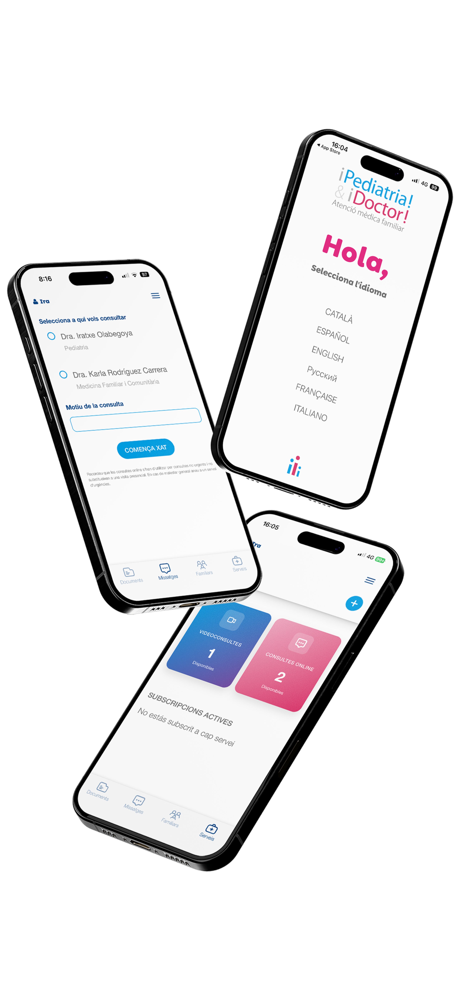

Disponibilitat
Atenció mèdica a domicili els 7 dies a la setmana, o en les nostres consultes a hores convingudes. Sense cues, sense esperes.
Un equip de professionals dedicats a entendre les necessitats de cada família. Sense cues, 7 dies a la setmana, a domicili o al consultori online.
Per pediatres, infermeres, metges de família i especialistes. Fisioteràpia, podologia, logopèdia i psicologia. Disponibles 7 dies a la setmana.
Atenció mèdica a domicili els 7 dies a la setmana, o en les nostres consultes a hores convingudes. Sense cues, sense esperes.
Videoconsultes i consultes escrites disponibles de 7 a 24 h tots els dies. Seguiment continuat amb el teu metge de referència.
Tots els dies de 7 a 24 h. Servei reemborsable per la majoria de companyies d'assegurances. Contacte via WhatsApp.
En les visites domiciliàries subministrem la primera dosi de medicament perquè no hagis de sortir de casa.
Tests de detecció ràpida i PCR per malalties freqüents. Resultats immediats sense esperar del laboratori.
Centre vacunal autoritzat. Vacunes del calendari oficial estatal i altres vacunes recomanables.
Convenis de col·laboració amb centres mèdics, hospitals i laboratoris per a totes les proves que necessitis.
Tots els membres del nostre equip són professionals amb una dilatada experiència. Fisioteràpia, podologia, logopèdia i psicologia.
Accedeix a la teva àrea privada de 7 a 24 h, tots els dies. Demana videoconsulta, envia consultes escrites, consulta el teu historial i rep les receptes quan ho necessitis.

Tots els membres del nostre equip entenen les necessitats de les persones com a pròpies.
Més de 15 anys d'experiència en pediatria d'atenció primària. Especialista en el seguiment integral de la salut infantil i familiar.
Ha desenvolupat tota la seva carrera en l'àmbit de la pediatria d'atenció primària i hospitalària. Referent a la Costa Brava.
Infermera pediàtrica amb una dilatada experiència en urgències. Cures i acompanyament familiar amb la màxima proximitat.
Visites a domicili a tota la comarca i consultori online des de qualsevol lloc. Consulta presencial a Palafrugell.
Tota la Costa Brava
7 dies a la setmana
Plaça de Catalunya, 5 baixos
17200 Palafrugell
Somos de Madrid y pasamos las vacaciones en Palamós, y nuestra hija se puso enferma. Nos trataron perfectamente, rápidos y muy profesionales.
Professionalitat i amabilitat absoluta. Quan necessitem atenció mèdica ràpida, sempre acudim a ells.
Tenim 2a residència a S'Agaró i sempre és la nostra opció per si algun dels nens es posa malalt. Servei excel·lent.
És un servei que funciona perfectament. La metgessa que ens va visitar es nota que li agrada aquesta feina.
Envia'ns una consulta i un membre de l'equip et respondrà. Per urgències, contacta'ns directament per telèfon o WhatsApp.